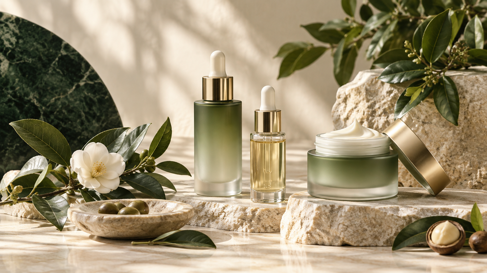

Brightening skincare: build a radiance routine without overloading actives
A brightening range should distinguish a dull-looking complexion from a medical pigmentation concern. For this AURVONX product, the commercial starting point is an everyday radiance routine with a comfortable texture, rather than a promise to change natural skin colour.
Choose the right product formats
Select one lead serum and a supporting moisturizer. A sheet mask can be an occasional format extension, while the body lotion answers a different use area. Do not make five products compete for the same routine step.
Understand the ingredients
Niacinamide is the evidence-led starting ingredient for this series. Vitamin C derivative identity must be resolved before assigning stability requirements or borrowing results obtained with another form of vitamin C.
Vitamin C Derivatives · Niacinamide / · Humectants / 、 · Hair oils and emollients / Haircare · Panthenol / B5 · Botanical comfort ingredients / 、β
- Niacinamide pigmentation study · Hakozaki et al., 2002Primary clinical and laboratory research
Build a useful collection
Cleanse, add the essence if wanted, choose the vitamin C serum, then moisturize. The body lotion is a separate body-care extension.
LUMEN set · View the collection
Plan your private-label range
Begin with a clear customer need and choose formats with distinct roles. Compare application preferences, packaging and the place of each product in the routine. Your destination market and sales channel should guide the final assortment.
Discuss your rangeRelated products
Vitamin C Radiance Serum
C
Explore product →SK-002 · LUMENNiacinamide Glow Lotion
Brightening
Explore product →SK-003 · LUMENGentle Glow Essence
Brightening
Explore product →SK-004 · LUMENRadiance Moisture Sheet Mask
Brightening
Explore product →SK-005 · LUMEN